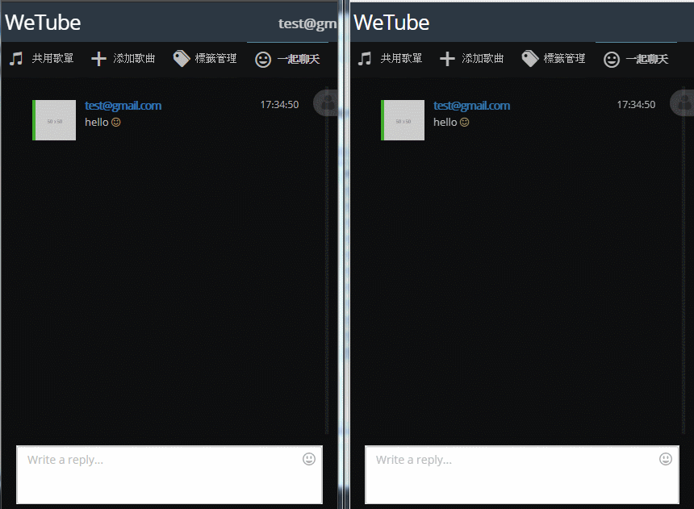

記得很久以前也寫過一個聊天室，當時使用JS每秒向後端查詢一次訊息紀錄，藉此來達到讓所有使用者訊息同步的目的，可想而知這個查詢量是非常龐大的，奈何以前知識有限，並沒有找到更好的解決方案。但現在發現了SignalR這個東西，總算是解決了多年前的一個遺憾。
什麼是SignalR?
其實我也還沒有很理解「SignalR」的原理，官方的介紹有看沒有很懂，但還是嘗試在這裡記錄下自己觀察到的東西。
Hub與HubProxy
必須在Client端中實作HubProxy，它的作用是跟Server端中的Hub進行持續連線，Server端也由此獲得了主動通知Client端的能力，並且多個Client端之間可以藉由Hub廣播的特性傳遞資料或執行Client端的方法。
以聊天室舉例
使用者A、使用者B，分別進入了聊天室，並都與後端進行了持續連線；當使用者A傳送了訊息”Hello”後，Hub會找到目前正在連線中的使用者A、B，並廣播該訊息”Hello”顯示於畫面上。
如何實作聊天室SignalR?
可以先看看「官方教學」中的Tutorial，然後參考下面步驟依樣畫葫蘆就可以簡單完成。
建立同步訊息Hub
當Hub收到訊息後，必須找出所有連接中的使用者，並傳送此訊息，程式如下。
1 | public class ChatHub : Hub |
建立HubProxy
在網頁載入完成後，使用HubProxy並指定Hub網址，與其建立持續連線。
1 | $(function () { |
使用HubProxy傳送訊息給Hub
當使用者在聊天室輸入訊息，並按下Enter鍵後，就可透過前面建立的HubProxy傳送資料給Hub。
1 | $scope.chatInputKeyDown = function (event) { |
使用HubProxy接收Hub廣播的訊息
Hub廣播訊息後，HubProxy理所當然地也接收到了這些資料，這時就可以將之加入於訊息中，透過Data Binding的特性更新於畫面上。
1 | $.connection.chatHub.client.receiveMessage = function (json) { |
Demo
下圖為使用兩個視窗開啟聊天室，並於左方發送訊息同步至另一方，這樣就輕而易舉的完成訊息同步功能了。

結語
SignalR到底有沒有解決效能問題？持續連線與廣播會不會給Server帶來更大的負擔？這些我都不知道，但目前已開發完成的聊天室運行狀況還算穩定。不管如何，這東西絕對值得一玩。